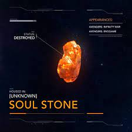

The Soul Stone is a remnant of one of the six singularities which existed before the universe's creation. After the universe came to be, the Big Bang forged the remnants of these singularities into six elemental crystals, dubbed the Infinity Stones, and hurtled them across the universe. The Soul Stone represented the soul. It would later go on to cultivate a reputation of mystery throughout the galaxy.The Soul Stone eventually found its way to Vormir where it became concealed in a shrine, accessible only to those who were willing to sacrifice someone that they loved.The Soul Stone was one of the six Infinity Stones, the remnant of a singularity that predated the universe, representing the element of soul. Kept on Vormir and under the protection of Red Skull since 1945, the Soul Stone was acquired by Thanos in 2018 after he sacrificed Gamora.
I got the picture from amino apps